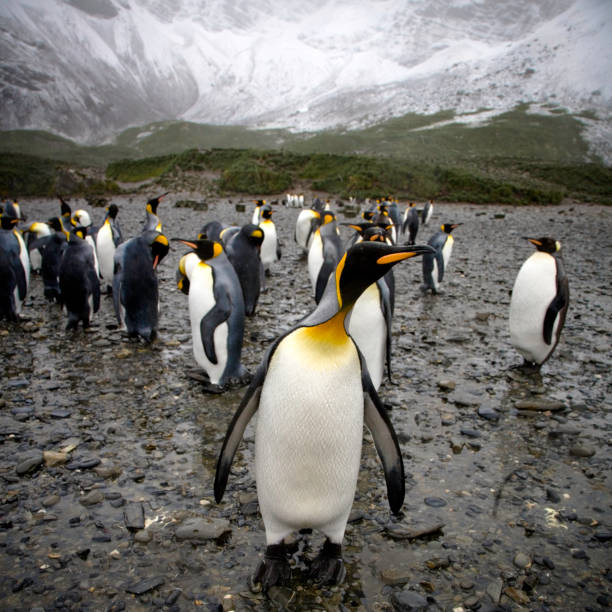

Royal penguin (Eudyptes schlegeli) is a kind of penguin and it only inhabits the sub-Antarctic Macquarie Island and the adjacent islands. [2] According to the International Union for Conservation of Nature (IUCN) the status of the royal penguin is Least Concern. The scientific name is in honour of Hermann Schlegel, a German origin and a notable zoologist of the time
About
The royal penguin is the largest one of the crested penguins and the species measures between 26 and 30 inches in length as well as 12 pounds of weight on average. It has the black plumage on the upper half and white feathers on the rest of the body; besides, it has two yellow plumes on the head. This penguin is quite probably the same as the macaroni penguin which almost looks exactly like this penguin but the chin is black in this one.

HABITAT: Royal penguins live on the coast or on the stony ground with only sparse vegetation on a rocky substrate.
RANGE: The royal penguin for instance breeds on Macquarie Island which is in Australia and also on the Bishop and Clerk Islands. Range Map
MIGRATION: The location of this penguin and activities during the winter when they are off their breeding grounds are not known.
BREEDING: Although they are generally exclusively gentoo, royal penguins breed at highly dense, large colonies during time of spring and summer. Penguin pairs actually lay two eggs which are hatched by both the male and female penguins. In most of the cases only one chick is raised and the male broods it to 10 to 20 days old while the female feeds it. Chicks take about 60 days to develop wings and develop the ability to fish on their own and they molt in the process.
LIFE CYCLE: This penguin has a life span of 15- 20 years in the wild and becomes sexually mature at seven to nine years old.
FEEDING: Royal penguins feed on krill, small fish, squid and small crustaceans are the main meals for the royal penguins.
The sounds of Royal Penguin
The audio is captured by Sander Lagerveld Location: Australia
Date:2017-11-19
WORLD COUNT BY 2024
S.No.
Country Name
Population
1.
Chile
13,000,000
2.
Falkland Islands
1,200,000
3.
Argentina
1,000,000
4.
Australia
500,000
5.
New Zealand
5,000,000
6.
South Africa
26,000
7.
Brazil
10,000
8.
Peru
4,000
Ecology and Conservation
The royal penguins themselves suffered a great deal from the aspect of being exploited for oil from the period of 1870 to 1918. The population is currently stable and is also recovering from this earlier abuse.
Thus, all 18 penguin individuals are protected by law from hunting and taking eggs. The provisions of the Antarctic Treaty executed in 1959 allow to kill a penguin or damage their eggs and nests. All penguin specimens collected under permit have to be cleared and records made with SCAR which is the scientific committee for antarctic research. The major threats to penguins include habitat loss, noise pollution, poaching of their main prey species, oil pollution, addition of wastes like plastics in water, and intrusion by people into the birds’ breeding grounds.